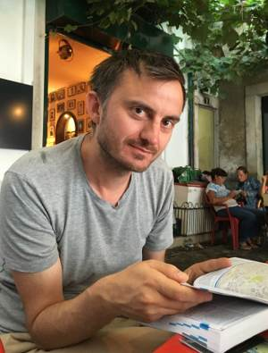
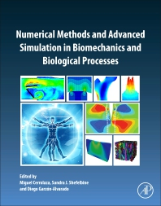

INRIA Paris & Sorbonne Universités
UPMC Paris VI, France
tel. +33 (0)1 80 49 43 18
Paul.Van_Liedekerke@inria.fr

I am currently research associate and engineer at INRIA Paris, and IfaDo, Germany (PI: Dr. Habil. D. Drasdo).
Interested in numerical models and new conceptual ideas, applications from industry to medicine. I develop software applications in C++/python.
I focus on numerical modeling of mechanics of solid materials and cell mechanics. The models that I developed so far address granular matter (powders and grains), (bio-) fluids, cellular tissues, and individual cells.
I further develop Agent-based Models, which are methods to predict collective behavior from individual dynamics controlled by rules or differential equations. Examples: tumor growth, swarms, crowd movement.
Image impressions:
Video impressions:
• Growing spheroids from one cell with high resolution model, see Research
• Regeneration of hepatocytes in a liver lobule blood vessel network simulated with high resolution model
• Impact of high velocity fluid beam with ceramic material, damage prediction (SPH + peridynamics)
• Free surface flow (dripping) of a visco-elastic fluid (modeled with SPH)
• Red blood cell in plasma flow passing through narrow vessel (SPH)
2. Van Liedekerke P., M. Palm, N. Jagiella and D. Drasdo (2015) Simulating tissue mechanics with Agent Based Models: concepts and perspectives. J. Comp. Part. mech2(4) (Invited review).
3. T. Odenthal, B. Smeets, Van Liedekerke P., E. Tijskens, H. Ramon, H. Van Oosterwijck (2013) Contact mechanics of adhesive triangulated bodies and application to a deformable cell model. Plos Comp. Biol 9(10).
4. Van Liedekerke P., Ghysels P., Tijskens E., Samaey G., Roose D. and Ramon H. (2010) Particle based model to simulate the micro-mechanics of a spherical biological cell. Phys. Rev. E 81(1). Selected for the Virtual Journal of Biological Physics Research.
5. Van Liedekerke P., Ghysels P., Tijskens E., Samaey G., Roose D. and Ramon H. (2011) The bruising of soft cellular tissue: a particle base simulation approach. Soft Matter 7, DOI:10.1039/C0SM01261K.
